Module: tag
awesome tag API.
What is a tag?
In AwesomeWM, a tag is a group of clients. It can either be used as labels or as more classical workspaces depending on how they are configured.

- A tag can be attached to multiple clients
- A client can be attached to multiple tags
- A tag can only be in 1 screen any given time, but can be moved
- All clients attached to a tag must be in the same screen as the tag
Creating tags
The default config initializes tags like this:
awful.tag(
{ "1", "2", "3", "4", "5", "6", "7", "8", "9" },
s,
awful.layout.layouts[1]
)
If you wish to have tags with different properties, then awful.tag.add is a better choice:
awful.tag.add("First tag", { icon = "/path/to/icon1.png", layout = awful.layout.suit.tile, master_fill_policy = "master_width_factor", gap_single_client = true, gap = 15, screen = s, selected = true, }) awful.tag.add("Second tag", { icon = "/path/to/icon2.png", layout = awful.layout.suit.max, screen = s, })
Note: the example above sets "First tag" to be selected explicitly, because otherwise you will find yourself without any selected tag.
Accessing tags
To access the "current tags", use
local tags = awful.screen.focused().selected_tags
See: awful.screen.focused
See: screen.selected_tags
To ignore the corner case where multiple tags are selected:
local t = awful.screen.focused().selected_tag
See: screen.selected_tag
To get all tags for the focused screen:
local tags = awful.screen.focused().tags
See: screen.tags
To get all tags:
local tags = root.tags()
To get the current tag of the focused client:
local t = client.focus and client.focus.first_tag or nil
See: client.focus See: client.first_tag
To get a tag from its name:
local t = awful.tag.find_by_name(awful.screen.focused(), "name")
Common keybindings code
Here is a few useful shortcuts not part of the default rc.lua. Add these
functions above -- {{{ Key bindings:
Delete the current tag
local function delete_tag() local t = awful.screen.focused().selected_tag if not t then return end t:delete() end
Create a new tag at the end of the list
local function add_tag() awful.tag.add("NewTag", { screen = awful.screen.focused(), layout = awful.layout.suit.floating }):view_only() end
Rename the current tag
local function rename_tag() awful.prompt.run { prompt = "New tag name: ", textbox = awful.screen.focused().mypromptbox.widget, exe_callback = function(new_name) if not new_name or #new_name == 0 then return end local t = awful.screen.focused().selected_tag if t then t.name = new_name end end } end
Move the focused client to a new tag
local function move_to_new_tag() local c = client.focus if not c then return end local t = awful.tag.add(c.class,{screen= c.screen }) c:tags({t}) t:view_only() end
Copy the current tag at the end of the list
local function copy_tag() local t = awful.screen.focused().selected_tag if not t then return end local clients = t:clients() local t2 = awful.tag.add(t.name, awful.tag.getdata(t)) t2:clients(clients) t2:view_only() end
And, in the globalkeys table:
awful.key({ modkey, }, "a", add_tag,
{description = "add a tag", group = "tag"}),
awful.key({ modkey, "Shift" }, "a", delete_tag,
{description = "delete the current tag", group = "tag"}),
awful.key({ modkey, "Control" }, "a", move_to_new_tag,
{description = "add a tag with the focused client", group = "tag"}),
awful.key({ modkey, "Mod1" }, "a", copy_tag,
{description = "create a copy of the current tag", group = "tag"}),
awful.key({ modkey, "Shift" }, "r", rename_tag,
{description = "rename the current tag", group = "tag"}),
See the global keybindings for more information about the keybindings.
Some signal names are starting with a dot. These dots are artefacts from the documentation generation, you get the real signal name by removing the starting dot.

Core components relationship
|
|
||||||||||||||||||||||||||||||
| Legend: c: a client object, t: a tag object, s: a screen object, k: an awful.key object, b: a awful.button object, n: a naughty.notification object | |||||||||||||||||||||||||||||||
Info:
- Copyright: 2008-2009 Julien Danjou
-
Originally authored by: Julien Danjou <julien@danjou.info>
(Full contributors list available on our github project)
Constructors
| awful.tag.add (name[, props=nil]) | Add a tag. | |
Static module functions
| tag.instances () -> () | Get the number of instances. | |
| tag.disconnect_signal (name, func) | Disconnect from a signal. | |
| tag.emit_signal (name, ...) | Emit a signal. | |
| tag.connect_signal (name, func) | Connect to a signal. | |
| awful.tag.new (names[, screen=1], layout) -> table | Create a set of tags and attach it to a screen. | |
| awful.tag.find_fallback (screen[, invalids=nil]) | Find a suitable fallback tag. | |
| awful.tag.history.update (obj) | Update the tag history. | |
| awful.tag.history.restore (screen, idx) | Revert tag history. | |
| awful.tag.find_by_name (s, name) -> () | Find a tag by name. | |
| awful.tag.incmwfact (add, t) | Increase master width factor. | |
| awful.tag.incgap (add, t) | Increase the spacing between clients | |
| awful.tag.togglemfpol (t) | Toggle size fill policy for the master client(s) between "expand" and "masterwidthfactor". | |
| awful.tag.incnmaster (add[, t[, sensible=false]]) | Increase the number of master windows. | |
| awful.tag.incncol (add[, t[, sensible=false]]) | Increase number of column windows. | |
| awful.tag.viewnone ([screen]) | View no tag. | |
| awful.tag.viewidx (i[, screen]) | Select a tag relative to the currently selected one. | |
| awful.tag.viewnext (screen) | View next tag. | |
| awful.tag.viewprev (screen) | View previous tag. | |
| awful.tag.viewmore (tags[, screen[, maximum=#tags]]) | View only a set of tags. | |
| awful.tag.viewtoggle (t) | Toggle selection of a tag | |
| awful.tag.attached_connect_signal (screen[, signal[, Callback]]) | Add a signal to all attached tags and all tags that will be attached in the future. | |
Object properties
| name | string | Tag name. | |
| selected | boolean | True if the tag is selected to be viewed. | |
| activated | boolean | True if the tag is active and can be used. | |
| index | integer | The tag index. | |
| screen | screen | The tag screen. | |
| master_width_factor | number | The tag master width factor. | |
| layout | layout or function | The tag client layout. | |
| layouts | table | The (proposed) list of available layouts for this tag. | |
| volatile | boolean | Define if the tag must be deleted when the last client is untagged. | |
| gap | number | The gap (spacing, also called useless_gap) between clients. | |
| gap_single_client | boolean | Enable gaps for a single client. | |
| master_fill_policy | string | Set size fill policy for the master client(s). | |
| master_count | integer | Set the number of master windows. | |
| icon | path or surface | Set the tag icon. | |
| column_count | integer | Set the number of columns. | |
Object methods
| :clients ([clients_table=nil]) -> () | Get or set the clients attached to this tag. | |
| :swap (tag2) | Swap 2 tags. | |
| :clear {[args]} | Remove all tagged clients. | |
| :delete ([fallback_tag=awful.tag.find_fallback()[, force=false]]) -> () | Delete a tag. | |
| :view_only () | View only a tag. | |
| :emit_signal (name, ...) | Emit a signal. | Inherited from gears.object |
| :connect_signal (name, func) | Connect to a signal. | Inherited from gears.object |
| :weak_connect_signal (name, func) | Connect to a signal weakly. | Inherited from gears.object |
Signals
| request::select | Emitted when a tag requests to be selected. | |
| request::default_layouts | This signal is emitted to request the list of default layouts. | |
| request::layouts | This signals is emitted when a tag needs layouts for the first time. | |
| tagged | Emitted when a client gets tagged with this tag. | |
| untagged | Emitted when a client gets untagged with this tag. | |
| cleared | Emitted when all clients are removed from the tag. | |
| property::urgent | Emitted when the number of urgent clients on this tag changes. | |
| property::urgent_count | Emitted when the number of urgent clients on this tag changes. | |
| request::screen | Emitted when a screen is removed. | |
| removal-pending | Emitted after request::screen if no new screen has been set. | |
Theme variables
| beautiful.master_width_factor | number | The default master width factor | |
| beautiful.useless_gap | number | The default gap. | |
| beautiful.gap_single_client | boolean | Enable gaps for a single client. | |
| beautiful.master_fill_policy | string | The default fill policy. | |
| beautiful.master_count | integer | The default number of master windows. | |
| beautiful.column_count | integer | The default number of columns. | |
Deprecated functions
| awful.tag.move [deprecated] | Move a tag to an absolute position in the screen[]:tags() table. | |
| awful.tag.swap [deprecated] | Swap 2 tags | |
| awful.tag.delete [deprecated] | Delete a tag. | |
| awful.tag.gettags [deprecated] | Get a list of all tags on a screen | |
| awful.tag.setscreen [deprecated] | Set a tag's screen | |
| awful.tag.getscreen [deprecated] | Get a tag's screen | |
| awful.tag.selectedlist [deprecated] | Return a table with all visible tags | |
| awful.tag.selected [deprecated] | Return only the first visible tag. | |
| awful.tag.setmwfact [deprecated] | Set master width factor. | |
| awful.tag.getmwfact [deprecated] | Get master width factor. | |
| awful.tag.setlayout [deprecated] | Set layout. | |
| awful.tag.setvolatile [deprecated] | Set if the tag must be deleted when the last client is untagged | |
| awful.tag.getvolatile [deprecated] | Get if the tag must be deleted when the last client closes | |
| awful.tag.setgap [deprecated] | Set the spacing between clients | |
| awful.tag.getgap [deprecated] | Get the spacing between clients. | |
| awful.tag.setmfpol [deprecated] | Set size fill policy for the master client(s) | |
| awful.tag.getmfpol [deprecated] | Get size fill policy for the master client(s) | |
| awful.tag.setnmaster [deprecated] | The number of master clients. | |
| awful.tag.getnmaster [deprecated] | Get the number of master windows. | |
| awful.tag.seticon [deprecated] | Set the tag icon | |
| awful.tag.geticon [deprecated] | Get the tag icon | |
| awful.tag.setncol [deprecated] | Set number of column windows. | |
| awful.tag.getncol [deprecated] | Get number of column windows. | |
| awful.tag.getidx [deprecated] | Get a tag's index in the gettags() table. | |
| awful.tag.viewonly [deprecated] | View only a tag. | |
| awful.tag.getdata [deprecated] | Get tag data table. | |
| awful.tag.getproperty [deprecated] | Get a tag property. | |
| awful.tag.setproperty [deprecated] | Set a tag property. | |
| awful.tag.withcurrent [deprecated] | Tag a client with the set of current tags. | |
Fields
| tag.awful.tag.history.limit | integer | The number of elements kept in the history. | |
| tag.awful.tag.layouts | N/A | An ordered list of layouts. | |
Constructors
- awful.tag.add (name[, props=nil])
-
Add a tag.
This function allow to create tags from a set of properties:
local t = awful.tag.add("my new tag", { screen = screen.primary, layout = awful.layout.suit.max, })Parameters:
- name string The tag name, a string
- props table or nil The tags initial properties, a table (default nil)
Returns:
-
The created tag
See also:
Static module functions
- tag.instances () -> ()
-
Get the number of instances.
Returns:
-
The number of tag objects alive.
- tag.disconnect_signal (name, func)
-
Disconnect from a signal.
Parameters:
- name string The name of the signal.
- func function The callback that should be disconnected.
- tag.emit_signal (name, ...)
-
Emit a signal.
Parameters:
- name string The name of the signal.
- ... Extra arguments for the callback functions. Each connected function receives the object as first argument and then any extra arguments that are given to emit_signal().
- tag.connect_signal (name, func)
-
Connect to a signal.
Parameters:
- name string The name of the signal.
- func function The callback to call when the signal is emitted.
- awful.tag.new (names[, screen=1], layout) -> table
-
Create a set of tags and attach it to a screen.
This is what's performed by the default config:
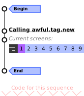
-- Calling awful.tag.new awful.tag({ "1", "2", "3", "4", "5", "6", "7", "8", "9" }, screen[1], awful.layout.layouts[1])It is also possible to set multiple layouts:
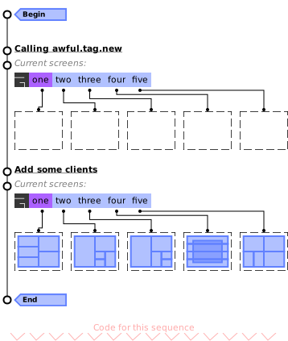
local some_layouts = { awful.layout.suit.fair, awful.layout.suit.spiral, awful.layout.suit.spiral.dwindle, awful.layout.suit.magnifier, awful.layout.suit.corner.nw, } -- Calling awful.tag.new awful.tag({ "one", "two", "three", "four", "five" }, screen[1], some_layouts) -- Add some clients for _, t in ipairs(screen[1].tags) do for _ = 1, 5 do awful.spawn("xterm", {tag = t}) end endParameters:
- names table The tag name, in a table
- screen screen or number The tag screen (defaults to screen 1). (default 1)
- layout table The layout or layout table to set for this tags by default.
Returns:
-
table
A table with all created tags.
- awful.tag.find_fallback (screen[, invalids=nil])
-
Find a suitable fallback tag.
Parameters:
- screen screen The screen to look for a tag on. [awful.screen.focused()]
- invalids table or nil A table of tags considered unacceptable. [selectedlist(scr)] (default nil)
- awful.tag.history.update (obj)
-
Update the tag history.
Parameters:
- obj screen Screen object.
- awful.tag.history.restore (screen, idx)
-
Revert tag history.
Parameters:
- screen screen The screen.
- idx number Index in history. Defaults to "previous" which is a special index toggling between last two selected sets of tags. Number (eg 1) will go back to the given index in history.
- awful.tag.find_by_name (s, name) -> ()
-
Find a tag by name.
Parameters:
Returns:
-
The tag found, or
nilUsage:
-- For the current screen local t = awful.tag.find_by_name(awful.screen.focused(), "name") -- For a screen index local t = awful.tag.find_by_name(screen[1], "name") -- For all screens local t = awful.tag.find_by_name(nil, "name")
- awful.tag.incmwfact (add, t)
-
Increase master width factor.
Parameters:
- add number Value to add to master width factor.
- t tag The tag to modify, if null tag.selected() is used.
See also:
- awful.tag.incgap (add, t)
-
Increase the spacing between clients
Parameters:
- add number Value to add to the spacing between clients
- t tag The tag to modify, if null tag.selected() is used.
See also:
- awful.tag.togglemfpol (t)
-
Toggle size fill policy for the master client(s)
between "expand" and "masterwidthfactor".
Parameters:
- t tag The tag to modify, if null tag.selected() is used.
See also:
- awful.tag.incnmaster (add[, t[, sensible=false]])
-
Increase the number of master windows.
Parameters:
- add number Value to add to number of master windows.
- t tag The tag to modify, if null tag.selected() is used. (optional)
- sensible boolean Limit nmaster based on the number of visible tiled windows? (default false)
See also:
- awful.tag.incncol (add[, t[, sensible=false]])
-
Increase number of column windows.
Parameters:
- add number Value to add to number of column windows.
- t tag The tag to modify, if null tag.selected() is used. (optional)
- sensible boolean Limit column_count based on the number of visible tiled windows? (default false)
- awful.tag.viewnone ([screen])
-
View no tag.
-- Calling awful.tag.new awful.tag({ "one", "two", "three", "four" }, screen[1]) -- Manually select some tags (tag 1 was auto selected). screen[1].tags[3].selected = true screen[1].tags[4].selected = true -- Deselect all tags. awful.tag.viewnone()Parameters:
- screen int or screen The screen. (optional)
- awful.tag.viewidx (i[, screen])
-
Select a tag relative to the currently selected one.
Note that this doesn't work well with multiple selection.
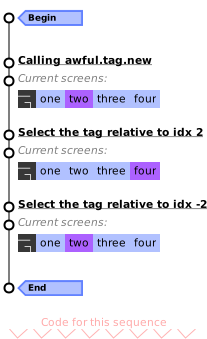
-- Calling awful.tag.new awful.tag({ "one", "two", "three", "four" }, screen[1]) screen[1].tags[2]:view_only() -- Select the tag relative to idx 2. awful.tag.viewidx(2) -- Select the tag relative to idx -2. awful.tag.viewidx(-2)This is equivalent to
screen.tags[i]:view_only()Parameters:
- i number The relative index to see.
- screen screen The screen. (optional)
See also:
- awful.tag.viewnext (screen)
-
View next tag. This is the same as
tag.viewidx(1).Note that this doesn't work well with multiple selection.
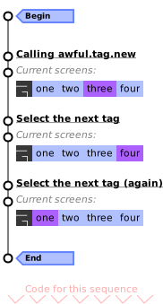
-- Calling awful.tag.new awful.tag({ "one", "two", "three", "four" }, screen[1]) screen[1].tags[3]:view_only() -- Select the next tag. awful.tag.viewnext() -- Select the next tag (again). awful.tag.viewnext()Parameters:
- screen screen The screen.
See also:
- awful.tag.viewprev (screen)
-
View previous tag. This is the same a
tag.viewidx(-1).Note that this doesn't work well with multiple selection.

-- Calling awful.tag.new awful.tag({ "one", "two", "three", "four" }, screen[1]) screen[1].tags[2]:view_only() -- Select the previous tag. awful.tag.viewprev() -- Select the previous tag (again). awful.tag.viewprev()Parameters:
- screen screen The screen.
See also:
- awful.tag.viewmore (tags[, screen[, maximum=#tags]])
-
View only a set of tags.
If
maximumis set, there will be a limit on the number of new tag being selected. The tags already selected do not count. To do nothing if one or more of the tags are already selected, setmaximumto zero.Parameters:
- tags table A table with tags to view only.
- screen screen The screen of the tags. (optional)
- maximum number The maximum number of tags to select. (default #tags)
- awful.tag.viewtoggle (t)
-
Toggle selection of a tag
Parameters:
- t tag Tag to be toggled
See also:
- awful.tag.attached_connect_signal (screen[, signal[, Callback]])
-
Add a signal to all attached tags and all tags that will be attached in the
future. When a tag is detached from the screen, its signal is removed.
Parameters:
- screen screen The screen concerned, or all if nil.
- signal string The signal name. (optional)
- Callback function (optional)
Object properties
- name string · 1 signal
-
Tag name.
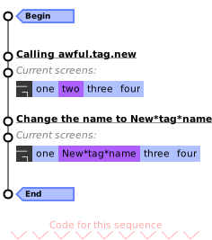
-- Calling awful.tag.new awful.tag({ "one", "two", "three", "four" }, screen[1]) screen[1].tags[2]:view_only() -- Change the name to New*tag*name. screen[1].tags[2].name = "New*tag*name"
Click to display more Emit signals:
- selected boolean · 1 signal
-
True if the tag is selected to be viewed.
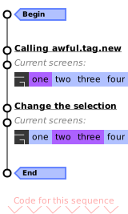
-- Calling awful.tag.new awful.tag({ "one", "two", "three", "four" }, screen[1]) -- Change the selection. screen[1].tags[1].selected = not screen[1].tags[1].selected screen[1].tags[2].selected = true screen[1].tags[3].selected = true
Click to display more Emit signals:
- activated boolean · 1 signal
-
True if the tag is active and can be used.
Click to display more Emit signals:
- index integer · 1 signal
-
The tag index.
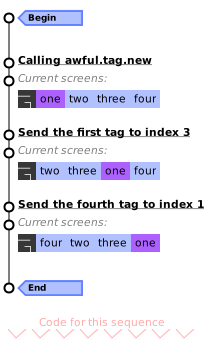
-- Calling awful.tag.new awful.tag({ "one", "two", "three", "four" }, screen[1]) -- Send the first tag to index 3. screen[1].tags[1].index = 3 -- Send the first tag to index 3. screen[1].tags[4].index = 1The index is the position as shown in the awful.widget.taglist.
Click to display more Emit signals:
- screen screen · 1 signal
-
The tag screen.
See also:
Click to display more Emit signals:
- master_width_factor number · 2 signals
-
The tag master width factor.
The master width factor is one of the 5 main properties used to configure the layout. Each layout interpret (or ignore) this property differently.
See the layout suit documentation for information about how the master width factor is used.
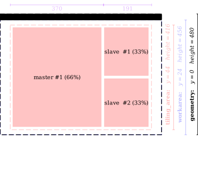
When multiple columns are used, the master width remains the same, but the other columns split the remaining space among them:
Type constraints:
- master_width_factor number Between 0 and 1
See also:
Click to display more Emit signals:
property::mwfactWhen the value changes (deprecated).property::master_width_factorWhen the value changes.
- layout layout or function · 1 signal
-
The tag client layout.
This property holds the layout. A layout can be either stateless or stateful. Stateless layouts are used by default by Awesome. They tile clients without any other overhead. They take an ordered list of clients and place them on the screen. Stateful layouts create an object instance for each tags and can store variables and metadata. Because of this, they are able to change over time and be serialized (saved).
Both types of layouts have valid usage scenarios.
Stateless layouts:
These layouts are stored in
awful.layout.suit. They expose a table with 2 fields:- name (string): The layout name. This should be unique.
- arrange (function): The function called when the clients need to be placed. The only parameter is a table or arguments returned by awful.layout.parameters
Stateful layouts:
The stateful layouts API is the same as stateless, but they are a function returining a layout instead of a layout itself. They also should have an
is_dynamic = trueproperty. If they don't,awful.tagwill create a new instance every time the layout is set. If they do, the instance will be cached and re-used.The client organized by the layout will fill the screen
tiling_areasection: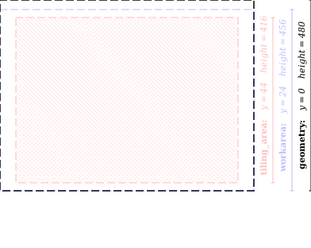
Type constraints:
- layout layout or function A layout table or a constructor function
See also:
Click to display more Emit signals:
- layouts table · 1 permission
-
The (proposed) list of available layouts for this tag.
This property allows to define a subset (or superset) of layouts available in the "rotation table". In the default configuration file,
Mod4+SpaceandMod4+Shift+Spaceare used to switch between tags. The awful.widget.layoutlist also uses this as its default layout filter.By default, it will be the same as awful.layout.layouts unless there the a layout not present is used. If that's the case they will be added at the front of the list.
See also:
Click to display more Requested actions or permissions:
Class Permission Context Default Description tag layouts awful granted When the layouts property is first called and there is no layouts, then that signal is called. - volatile boolean · 1 signal
-
Define if the tag must be deleted when the last client is untagged.
This is useful to create "throw-away" tags for operation like 50/50 (Windows "Aero Snap) side-by-side views. This keybinding code for this is:
local function aero_tag() local c = client.focus if not c then return end local c2 = awful.client.focus.history.list[2] if (not c2) or c2 == c then return end local t = awful.tag.add("Aero", { screen = c.screen, volatile = true, layout = awful.layout.suit.tile, master_width_factor = 0.5 }) t:clients({c, c2}) t:view_only() end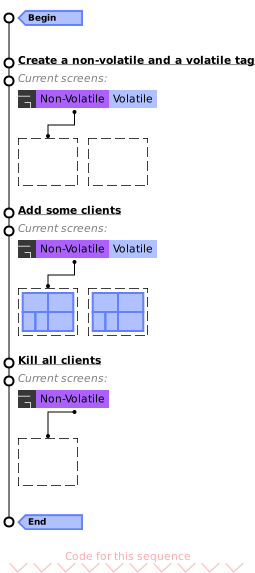
-- Create a non-volatile and a volatile tag. awful.tag.add("Non-Volatile", { screen = screen[1], layout = awful.layout.suit.corner.nw, volatile = false, }) awful.tag.add("Volatile", { screen = screen[1], layout = awful.layout.suit.corner.nw, volatile = true, }) -- Add some clients. for _, t in ipairs(screen[1].tags) do for _ = 1, 5 do awful.spawn("xterm", {tag = t}) end end -- Kill all clients. while #client.get() ~= 0 do client.get()[1]:kill() endAs you can see, the "Volatile" tag has been automatically discarded while the "Non-volatile" tag is still there (but with zero clients).
See also:
Click to display more Emit signals:
- gap number · 1 signal
-
The gap (spacing, also called useless_gap) between clients.
This property allows to waste space on the screen in the name of style, unicorns and readability.
In this example, the value of gap is set to 20:
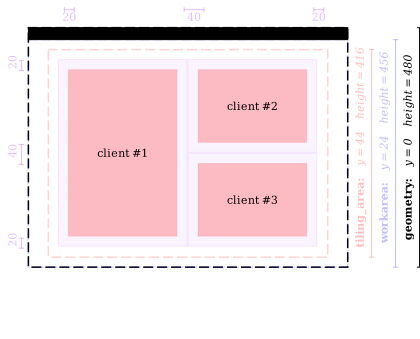
Compared to setting to the (very high) value of 50:
Type constraints:
- gap number The value has to be greater than zero.
See also:
Click to display more Emit signals:
property::useless_gapWhen the gap changes.
- gap_single_client boolean · 1 signal
-
Enable gaps for a single client.
If the gaps are used purely for readability when multiple clients are tiled, then it may make sense to disable it when there is only a single client (to recover that space). In that case, set gap_single_client to
false.Default (with a 20px gap):
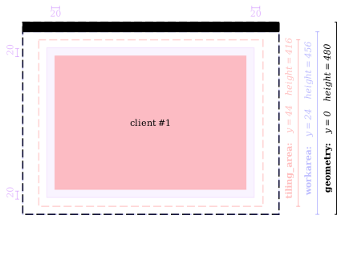
when set to false:

Type constraints:
- gap_single_client boolean Enable gaps for a single client
See also:
Click to display more Emit signals:
property::gap_single_clientWhen the gap_single_client value changes.selftag The object which changed (useful when connecting many object to the same callback).
- master_fill_policy string · 1 signal
-
Set size fill policy for the master client(s).
Some multi-column layouts can be configured so that the space is redistributed when there is not enough clients to fill all columns.
* Possible values*:
- expand: Take all the space
- master_width_factor: Only take the ratio defined by the master_width_factor
This is the default behavior of the
tile.leftlayout (expand):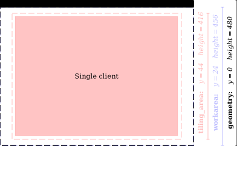
This is what happends when set to master_width_factor:
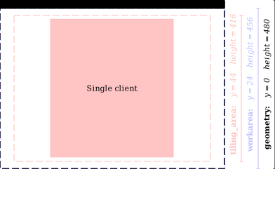
The remaining space that would have been used for the second column is redistributed on both side.
Type constraints:
- master_fill_policy string "expand" or "masterwidthfactor"
See also:
Click to display more Emit signals:
property::master_fill_policyWhen the master_fill_policy value changes.selftag The object which changed (useful when connecting many object to the same callback).
- master_count integer · 2 signals
-
Set the number of master windows.
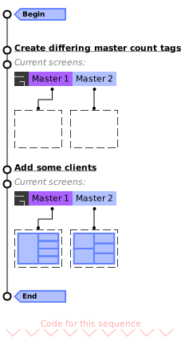
-- Create a tag with master count of 1 and tag with count of 2 awful.tag.add("Master 1", { screen = screen[1], layout = awful.layout.suit.tile, master_count = 1, }) awful.tag.add("Master 2", { screen = screen[1], layout = awful.layout.suit.tile, master_count = 2, }) -- Add some clients. for _, t in ipairs(screen[1].tags) do for _ = 1, 5 do awful.spawn("xterm", {tag = t}) end endType constraints:
- master_count integer nmaster Only positive values are accepted
See also:
Click to display more Emit signals:
property::nmasterDeprecated.property::master_countWhen the value changes.
- icon path or surface · 1 signal
-
Set the tag icon.
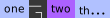
awful.tag.add("one", {}) awful.tag.add("two", { icon = beautiful.awesome_icon }) awful.tag.add("three", {})Type constraints:
- icon path or surface The icon
See also:
Click to display more Emit signals:
- column_count integer · 2 signals
-
Set the number of columns.
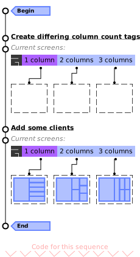
-- Create a tag with column count of 1 and tag with count of 2 awful.tag.add("1 column", { screen = screen[1], layout = awful.layout.suit.tile, column_count = 1, }) awful.tag.add("2 columns", { screen = screen[1], layout = awful.layout.suit.tile, column_count = 2, }) awful.tag.add("3 columns", { screen = screen[1], layout = awful.layout.suit.tile, column_count = 3, }) -- Add some clients. for _, t in ipairs(screen[1].tags) do for _ = 1, 6 do awful.spawn("xterm", {tag = t}) end endType constraints:
- ncol integer Has to be greater than 1
See also:
Click to display more Emit signals:
property::ncolDeprecated.property::column_countWhen the value changes.
Object methods
- :clients ([clients_table=nil]) -> ()
-
Get or set the clients attached to this tag.
Parameters:
- clients_table table None or a table of clients to set as being tagged with this tag. (default nil)
Returns:
-
A table with the clients attached to this tags.
- :swap (tag2)
-
Swap 2 tags.
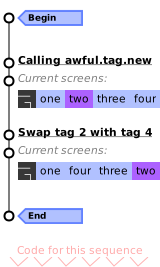
-- Calling awful.tag.new awful.tag({ "one", "two", "three", "four" }, screen[1]) screen[1].tags[2]:view_only() -- Swap tag 2 with tag 4. screen[1].tags[2]:swap(screen[1].tags[4])Parameters:
- tag2 tag The second tag
See also:
- :clear {[args]} · 2 signals
-
Remove all tagged clients.
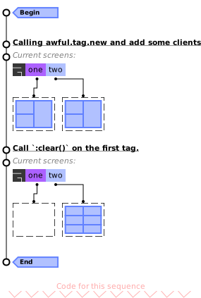
-- Calling awful.tag.new awful.tag({ "one", "two" }, screen[1], some_layouts) -- Call :clear() on the first tag. screen[1].tags[1]:clear{}end)
Parameters:
- args The arguments.
- fallback_tag tag A fallback tag.
- allow_untagged boolean Allow the untagged clients to remain untagged. (default false)
Click to display more Emit signals:
- args The arguments.
- :delete ([fallback_tag=awful.tag.find_fallback()[, force=false]]) -> ()
-
Delete a tag.
To delete the current tag:
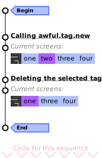
-- Calling awful.tag.new awful.tag({ "one", "two", "three", "four" }, screen[1]) screen[1].tags[2]:view_only() -- Delete the selected tag. mouse.screen.selected_tag:delete()Parameters:
- fallback_tag tag Tag to assign stickied tags to. (default awful.tag.find_fallback())
- force boolean Move even non-sticky clients to the fallback tag. (default false)
Returns:
-
Returns true if the tag is successfully deleted.
If there are no clients exclusively on this tag then delete it. Any
stickied clients are assigned to the optional 'fallback_tag'.
If after deleting the tag there is no selected tag, try and restore from
history or select the first tag on the screen.
See also:
- :view_only ()
-
View only a tag.
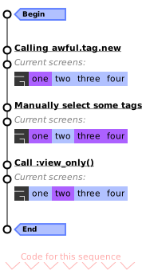
-- Calling awful.tag.new awful.tag({ "one", "two", "three", "four" }, screen[1]) -- Manually select some tags (tag 1 was auto selected). screen[1].tags[3].selected = true screen[1].tags[4].selected = true -- Call :view_only() on the second tag. screen[1].tags[2]:view_only()See also:
- :emit_signal (name, ...) · Inherited from gears.object
-
Emit a signal.
Parameters:
- name string The name of the signal.
- ... Extra arguments for the callback functions. Each connected function receives the object as first argument and then any extra arguments that are given to emit_signal().
- :connect_signal (name, func) · Inherited from gears.object
-
Connect to a signal.
Parameters:
- name string The name of the signal.
- func function The callback to call when the signal is emitted.
- :weak_connect_signal (name, func) · Inherited from gears.object
-
Connect to a signal weakly.
This allows the callback function to be garbage collected and automatically disconnects the signal when that happens.
Warning: Only use this function if you really, really, really know what you are doing.
Parameters:
- name string The name of the signal.
- func function The callback to call when the signal is emitted.
Signals
- request::select · 1 permission
-
Emitted when a tag requests to be selected.
Arguments:
- context string The reason why it was called.
Click to display more Requested actions or permissions:
Class Permission Context Default Description tag select ewmh granted When the client request to be moved to a specific virtual desktop. AwesomeWM interprets virtual desktop as indexed tags. - request::default_layouts · 1 permission · Class level only
-
This signal is emitted to request the list of default layouts.
It is emitted on the global tag class rather than individual tag objects. This default handler is part of rc.lua:
tag.connect_signal("request::default_layouts", function() awful.layout.append_default_layouts({ awful.layout.suit.floating, awful.layout.suit.tile, awful.layout.suit.tile.left, awful.layout.suit.tile.bottom, awful.layout.suit.tile.top, awful.layout.suit.fair, awful.layout.suit.fair.horizontal, awful.layout.suit.spiral, awful.layout.suit.spiral.dwindle, awful.layout.suit.max, awful.layout.suit.max.fullscreen, awful.layout.suit.magnifier, awful.layout.suit.corner.nw, }) end)External modules can also use this signal to dynamically add additional default layouts.
tag.connect_signal("request::default_layouts", function() awful.layout.append_default_layouts({ custom_module.layout_1, custom_module.layout_2, }) end)Arguments:
- context string The context (currently always "startup").
See also:
Click to display more Requested actions or permissions:
Class Permission Context Default Description tag default_layouts startup granted When AwesomeWM starts, it queries for default layout using this request. - request::layouts
-
This signals is emitted when a tag needs layouts for the first time.
If no handler implement it, it will fallback to the content added by request::default_layouts
Arguments:
- context string The context (currently always "awful").
- hints table A, currently empty, table with hints.
- tagged
-
Emitted when a client gets tagged with this tag.
Arguments:
- c client The tagged client.
- untagged
-
Emitted when a client gets untagged with this tag.
Arguments:
- c client The untagged client.
- cleared
-
Emitted when all clients are removed from the tag.
See also:
- property::urgent
-
Emitted when the number of urgent clients on this tag changes.
Arguments:
- boolean
trueif there is at least one urgent client on the tag.
See also:
- boolean
- property::urgent_count
-
Emitted when the number of urgent clients on this tag changes.
Arguments:
- integer The number of urgent clients on the tag.
See also:
- request::screen
-
Emitted when a screen is removed.
This can be used to salvage existing tags by moving them to a new screen (or creating a virtual screen).
By default, there is no handler for this request and the tags will be deleted. To prevent this, an handler for this request must simply set a new screen for the tag.
Arguments:
- context string Why it was called.
- removal-pending
- Emitted after request::screen if no new screen has been set. The tag will be deleted, this is a last chance to move its clients before they are sent to a fallback tag. Connect to request::screen if you wish to salvage the tag.
Theme variables
- beautiful.master_width_factor number
-
The default master width factor
Type constraints:
- number (default: 0.5)
See also:
- beautiful.useless_gap number
-
The default gap.
Type constraints:
- number (default: 0)
See also:
- beautiful.gap_single_client boolean
-
Enable gaps for a single client.
Type constraints:
- boolean (default: true)
See also:
- beautiful.master_fill_policy string
-
The default fill policy.
* Possible values*:
- expand: Take all the space
- *masterwidthfactor*: Only take the ratio defined by the master_width_factor
Type constraints:
- string (default: "expand")
See also:
- beautiful.master_count integer
-
The default number of master windows.
Type constraints:
- integer (default: 1)
See also:
- beautiful.column_count integer
-
The default number of columns.
Type constraints:
- integer (default: 1)
See also:
Deprecated functions
- awful.tag.move [deprecated]
-
Move a tag to an absolute position in the screen[]:tags() table.
Parameters:
- new_index Integer absolute position in the table to insert.
- target_tag The tag that should be moved. If null, the currently selected tag is used.
See also:
- awful.tag.swap [deprecated]
-
Swap 2 tags
Parameters:
- tag1 The first tag
- tag2 The second tag
See also:
- awful.tag.delete [deprecated]
-
Delete a tag.
Parameters:
- target_tag Optional tag object to delete. [selected()]
- fallback_tag Tag to assign stickied tags to. [~selected()]
Returns:
-
Returns true if the tag is successfully deleted, nil otherwise.
If there are no clients exclusively on this tag then delete it. Any
stickied clients are assigned to the optional 'fallback_tag'.
If after deleting the tag there is no selected tag, try and restore from
history or select the first tag on the screen.
See also:
- awful.tag.gettags [deprecated]
-
Get a list of all tags on a screen
Parameters:
- s screen Screen
Returns:
-
A table with all available tags
See also:
- awful.tag.setscreen [deprecated]
-
Set a tag's screen
Parameters:
- s Screen
- t tag object
See also:
- awful.tag.getscreen [deprecated]
-
Get a tag's screen
Parameters:
- t tag object (optional)
Returns:
-
Screen number
See also:
- awful.tag.selectedlist [deprecated]
-
Return a table with all visible tags
Parameters:
- s Screen.
Returns:
-
A table with all selected tags.
See also:
- awful.tag.selected [deprecated]
-
Return only the first visible tag.
Parameters:
- s Screen.
See also:
- awful.tag.setmwfact [deprecated]
-
Set master width factor.
Parameters:
- mwfact Master width factor.
- t The tag to modify, if null tag.selected() is used.
See also:
- awful.tag.getmwfact [deprecated]
-
Get master width factor.
Parameters:
- t The tag. (optional)
See also:
- awful.tag.setlayout [deprecated]
-
Set layout.
Parameters:
- layout a layout table or a constructor function
- t The tag to modify
Returns:
-
The layout
See also:
- awful.tag.setvolatile [deprecated]
-
Set if the tag must be deleted when the last client is untagged
Parameters:
- volatile boolean If the tag must be deleted when the last client is untagged
- t The tag to modify, if null tag.selected() is used.
See also:
- awful.tag.getvolatile [deprecated]
-
Get if the tag must be deleted when the last client closes
Parameters:
- t The tag to modify, if null tag.selected() is used.
Returns:
-
boolean
If the tag will be deleted when the last client is untagged
See also:
- awful.tag.setgap [deprecated]
-
Set the spacing between clients
Parameters:
- useless_gap The spacing between clients
- t The tag to modify, if null tag.selected() is used.
See also:
- awful.tag.getgap [deprecated]
-
Get the spacing between clients.
Parameters:
- t tag The tag. (default tag.selected())
- numclients int Number of (tiled) clients. Passing this will return 0 for a single client. You can override this function to change this behavior. (optional)
See also:
- awful.tag.setmfpol [deprecated]
-
Set size fill policy for the master client(s)
Parameters:
- policy string Can be set to "expand" (fill all the available workarea) or "masterwidthfactor" (fill only an area inside the master width factor)
- t tag The tag to modify (default tag.selected())
See also:
- awful.tag.getmfpol [deprecated]
-
Get size fill policy for the master client(s)
Parameters:
- t tag The tag (default tag.selected())
Returns:
-
string
Possible values are
"expand" (fill all the available workarea, default one) or
"masterwidthfactor" (fill only an area inside the master width factor)
See also:
- awful.tag.setnmaster [deprecated]
-
The number of master clients.
Parameters:
- nmaster The number of master windows.
- t The tag. (optional)
See also:
- awful.tag.getnmaster [deprecated]
-
Get the number of master windows.
Parameters:
- t The tag. (optional)
See also:
- awful.tag.seticon [deprecated]
-
Set the tag icon
Parameters:
- icon the icon to set, either path or image object
- tag tag the tag
See also:
- awful.tag.geticon [deprecated]
-
Get the tag icon
Parameters:
- tag tag the tag
See also:
- awful.tag.setncol [deprecated]
-
Set number of column windows.
Parameters:
- ncol The number of column.
- t The tag to modify, if null tag.selected() is used.
See also:
- awful.tag.getncol [deprecated]
-
Get number of column windows.
Parameters:
- t The tag. (optional)
See also:
- awful.tag.getidx [deprecated]
-
Get a tag's index in the gettags() table.
Parameters:
- query_tag The tag object to find. [selected()]
Returns:
-
The index of the tag, nil if the tag is not found.
See also:
- awful.tag.viewonly [deprecated]
-
View only a tag.
Parameters:
- t tag The tag object.
See also:
- awful.tag.getdata [deprecated]
-
Get tag data table.
Do not use.
Parameters:
- _tag tag The tag.
Returns:
-
The data table.
- awful.tag.getproperty [deprecated]
-
Get a tag property.
Use
_tag.propdirectly.Parameters:
- _tag tag The tag.
- prop string The property name.
Returns:
-
The property.
- awful.tag.setproperty [deprecated]
-
Set a tag property.
This properties are internal to awful. Some are used to draw taglist, or to
handle layout, etc.
Use
_tag.prop = valueParameters:
- _tag The tag.
- prop The property name.
- value The value.
- awful.tag.withcurrent [deprecated]
-
Tag a client with the set of current tags.
Parameters:
- c The client to tag.
Fields
- tag.awful.tag.history.limit integer
- The number of elements kept in the history.
- tag.awful.tag.layouts N/A
-
An ordered list of layouts.
awful.tag.layoutIs usually defined in rc.lua. It store the list of layouts used when selecting the previous and next layouts. This is the default:-- Table of layouts to cover with awful.layout.inc, order matters. awful.layout.layouts = { awful.layout.suit.floating, awful.layout.suit.tile, awful.layout.suit.tile.left, awful.layout.suit.tile.bottom, awful.layout.suit.tile.top, awful.layout.suit.fair, awful.layout.suit.fair.horizontal, awful.layout.suit.spiral, awful.layout.suit.spiral.dwindle, awful.layout.suit.max, awful.layout.suit.max.fullscreen, awful.layout.suit.magnifier, awful.layout.suit.corner.nw, -- awful.layout.suit.corner.ne, -- awful.layout.suit.corner.sw, -- awful.layout.suit.corner.se, }